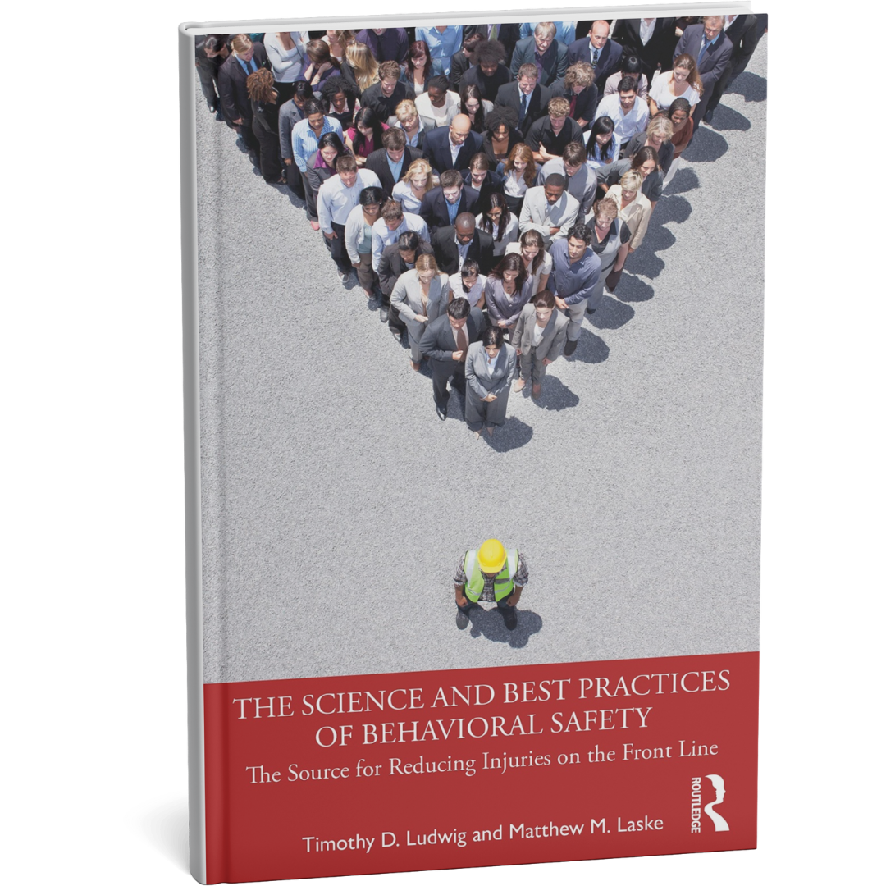
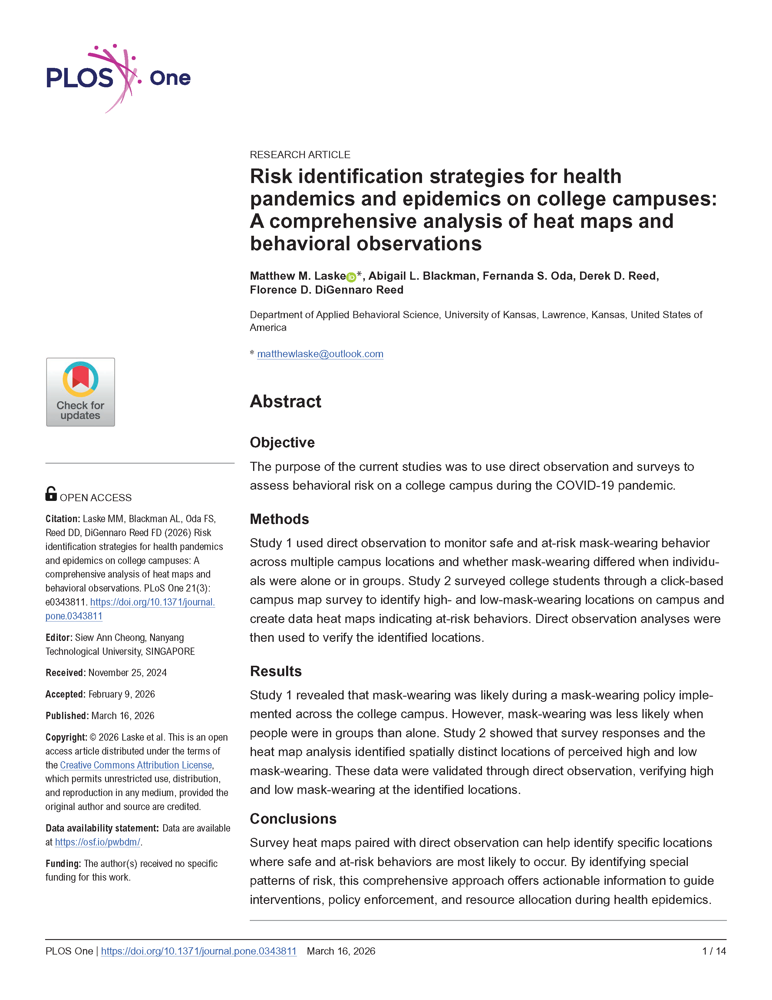
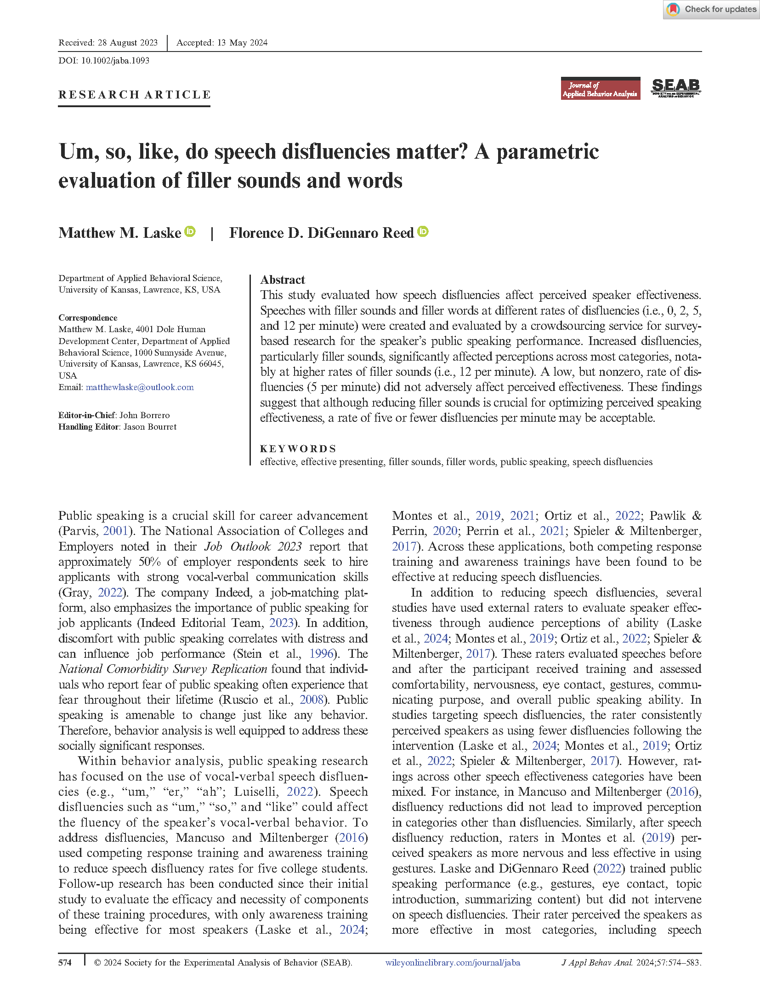
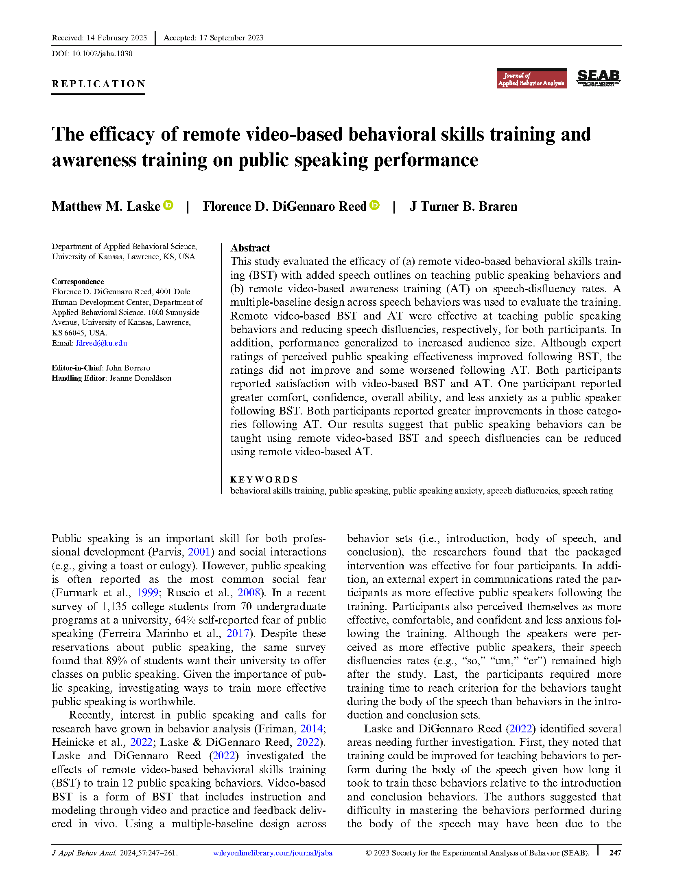
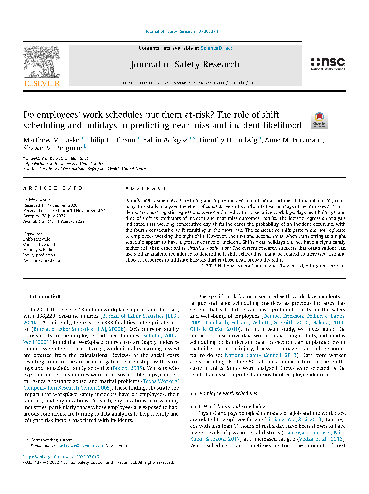
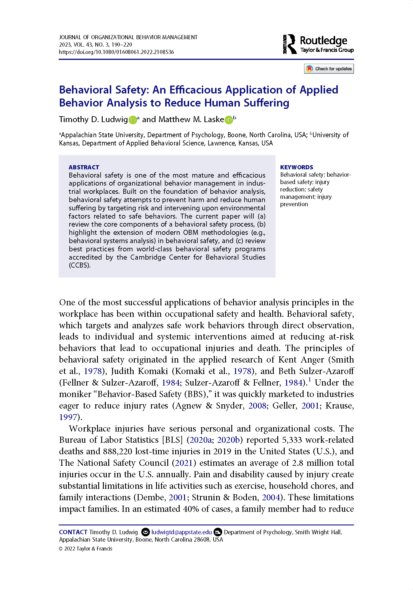

I seek to improve employee performance and well-being through applied and use-inspired laboratory research.

Timothy D. Ludwig & Matthew M. Laske (2023)
This book presents the scientific principles and real-world best practices of behavioral safety — one of the most impactful applications of behavioral science to reduce injuries in industrial workplaces.
View Publication
This research uses direct observation and click-based campus survey heat maps to identify where safe and at-risk mask-wearing behaviors occurred during COVID-19. The approach offers actionable data to guide interventions during health epidemics.
Read Article
Discover how filler sounds like um and like shape audience perceptions of public speaking effectiveness. This study determines when disfluencies hurt and when a few may be just fine.
Read Article
Explore how video-based training can boost public speaking skills and reduce distracting filler words through structured outlines and awareness strategies.
Read Article
This study shows how consecutive shifts raise the likelihood of workplace incidents. Insights help organizations design safer schedules.
Read Article
Reviews core components of behavioral safety processes and best practices from world-class programs accredited by the Cambridge Center for Behavioral Studies.
Read Article